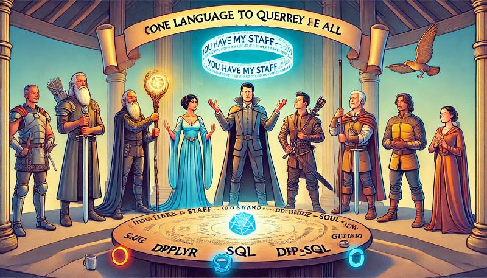

SQL of the Rings: One Language to Query Them All (with R)
Concise Tutorial for R Database Interfaces

In the vast and intricate world of data, much like the realms of Middle-earth, there lies a powerful force — SQL, the language of databases. SQL (Structured Query Language) has long been the One Language to query them all, a tool that allows us to retrieve, manipulate, and manage the vast treasures of information stored within our databases. But like any great power, its true potential is unlocked only when wielded wisely.
Enter R, the versatile and mighty language of data analysis, statistics, and visualization. R is to data scientists what the Elven rings were to their bearers — a tool of great influence, allowing them to perform incredible feats of analysis, prediction, and insight. However, as potent as R is, it cannot rule the world of data alone. The true power lies in the harmonious combination of R and SQL, much like the fellowship that united to confront the challenges of Middle-earth.
In this article, we start a journey — a quest, if you will — through the realms of SQL and R. Together, we will explore how these two powerful tools can be united to master the ever-growing landscape of data. Whether you are an analyst delving into complex datasets, a data scientist crafting predictive models, or a developer integrating data pipelines, the synergy of SQL and R will guide you to new heights of efficiency and insight.
We begin our journey by learning how to connect R to various databases, akin to unlocking the gates of Moria. We will then delve into the art of crafting secure and efficient queries, reminiscent of the dwarves forging tools in the depths of their mines. As we progress, we will harness the power of dbplyr—the One Interface that binds the simplicity of dplyr with the might of SQL. Along the way, we will face challenges, such as battling large datasets, and discover techniques to emerge victorious.
Finally, we will touch upon the ancient art of Object-Relational Mapping (ORM), a method of wielding SQL’s power with the precision of R6 object-oriented programming, akin to forging your own rings of power.
So, gather your courage and prepare your tools, for we are about to embark on an epic adventure — one that will unlock the full potential of SQL and R, and elevate your data analysis to legendary status.
Speak, Friend, and Enter: Connecting R to Your Databases
Every great journey begins with a single step, and in our quest to master SQL in R, that step is establishing a connection to our database. Just as the Fellowship needed to speak the password to open the Gates of Moria, we must correctly configure our connections to access the treasures of data stored within our databases.
In R, the key to these gates lies in the DBI package, a robust and consistent interface for connecting to a variety of Database Management Systems (DBMS). Whether you’re delving into the depths of an SQLite file, managing the sprawling realms of a MariaDB instance, or exploring the lightning-fast DuckDB, DBI and its companion drivers will guide you through.
Connecting to SQLite: The Ancient Repository
SQLite is the equivalent of an ancient Dwarven repository — compact, self-contained, and requiring no external server. It’s perfect for projects where you need a lightweight, portable database that’s easy to manage.
Here’s how you can connect to an SQLite database in R:
library(DBI)
# Establish a connection to the SQLite database
con_sqlite <- dbConnect(RSQLite::SQLite(), dbname = "my_database.sqlite")
# Check connection
print(con_sqlite)This simple command opens the gate to your SQLite database, allowing you to explore its contents, query its tables, and manipulate its data — all from within R.
Connecting to MariaDB: The Kingdom of Data
For larger, more complex datasets requiring a scalable, server-based solution, MariaDB is the kingdom where your data resides. MariaDB, a powerful fork of MySQL, is well-suited for enterprise-level applications, offering robust performance and extensive features.
Connecting to MariaDB in R is straightforward with the RMariaDB package:
library(DBI)
# Establish a connection to the MariaDB database
con_mariadb <- dbConnect(RMariaDB::MariaDB(),
dbname = "your_database_name",
host = "localhost",
user = "your_username",
password = "your_password")
# Check connection
print(con_mariadb)With this connection, you gain access to the vast resources of your MariaDB database, ready to be queried and analyzed.
Connecting to DuckDB: The Speed of a Ranger
DuckDB is the ranger of the database world — swift, efficient, and designed for rapid analytical queries. It’s a great choice when you need to process large datasets on the fly, without the overhead of traditional database management systems.
Here’s how you can connect to DuckDB in R:
library(DBI)
# Establish a connection to the DuckDB database
con_duckdb <- dbConnect(duckdb::duckdb(), dbdir = "my_database.duckdb")
# Check connection
print(con_duckdb)With DuckDB, you can traverse large datasets with the speed and agility of a ranger, executing complex queries in a fraction of the time it might take with other systems.
Closing the Gate: Disconnecting from Databases
Just as it’s important to close the Gates of Moria once the Fellowship has passed through, it’s essential to properly close your database connections when you’re done. This ensures that resources are freed and that you maintain a good practice of managing your connections.
# Disconnect from SQLite
dbDisconnect(con_sqlite)
# Disconnect from MariaDB
dbDisconnect(con_mariadb)
# Disconnect from DuckDB
dbDisconnect(con_duckdb)By mastering the art of database connections in R, you’re well on your way to unlocking the full potential of SQL and R. With the gates open, you’re ready to explore the data that lies within.
Forging Secure Queries in the Mines of Moria
As we venture deeper into the world of data, it’s essential to equip ourselves with the right tools — much like the Dwarves of Moria, who crafted their mighty weapons and armor in the deep mines. In the realm of SQL and R, these tools are encapsulated within the DBI package, which allows us to perform operations on our databases securely and efficiently.
Forging Queries with dbExecute and dbGetQuery
Two of the most fundamental tools in our SQL arsenal are dbExecute and dbGetQuery. These functions allow us to run SQL commands directly from R, retrieving or modifying data as needed.
dbGetQuery: This function is used to execute SQL SELECT queries, retrieving data from the database and returning it as a data frame in R.
# Retrieve data from a table
result <- dbGetQuery(con_mariadb, "SELECT * FROM users WHERE age > 30")
print(result)dbExecute: This function is used for SQL commands that modify the database, such as INSERT, UPDATE, or DELETE statements.
# Insert a new record into the users table
dbExecute(con_mariadb, "INSERT INTO users (name, age) VALUES ('Aragorn', 87)")These tools, while powerful, must be wielded with care. Just as the Dwarves took great care in forging their weapons, we must ensure that our queries are secure and efficient.
Securing Queries with dbBind
In the Mines of Moria, the Dwarves faced many dangers, some of their own making. Similarly, careless use of SQL queries can expose your database to significant risks, particularly SQL injection attacks. This is where dbBind comes in—offering a way to securely bind parameters to your SQL queries, preventing malicious inputs from wreaking havoc.
Here’s how you can use dbBind to safely insert user data:
# Securely insert data using parameterized queries
query <- "INSERT INTO users (name, age) VALUES (?, ?)"
dbExecute(con_mariadb, query, params = list("Frodo", 50))By using dbBind, you ensure that inputs are properly escaped and handled, much like a Dwarven smith ensuring that their forge is safe from disaster.
Crafting Complex Queries
Just as the Dwarves crafted intricate weapons, you can use SQL to build complex, multi-step queries. These might involve subqueries, joins, or aggregations — allowing you to derive powerful insights from your data.
# Example of a complex query using JOIN
query <- "
SELECT users.name, COUNT(orders.id) AS order_count
FROM users
JOIN orders ON users.id = orders.user_id
GROUP BY users.name
HAVING COUNT(orders.id) > 5
"
result <- dbGetQuery(con_mariadb, query)
print(result)With these tools in hand, you are well-equipped to navigate the depths of your database, uncovering insights and forging a path through the data with the precision and skill of a master craftsman.
One Interface to Bind Them All: dbplyr and the Power of dplyr in Databases
In the saga of our data journey, dbplyr emerges as the One Interface to bind the simplicity of dplyr with the might of SQL. Much like the One Ring in Tolkien’s epic, dbplyr unites the strengths of different realms—in this case, the worlds of R and SQL—allowing us to perform powerful data manipulations without ever leaving the comfort of R’s syntax.
Harnessing the Power of dbplyr
dbplyr acts as a bridge, translating dplyr commands into SQL queries that are executed directly on the database. This means you can leverage the tidyverse’s intuitive syntax while still harnessing the full power of SQL under the hood.
library(dplyr)
library(dbplyr)
# Reference a table in the database using `tbl()`
users_db <- tbl(con_mariadb, "users")
# Perform a `dplyr` operation (automatically translated to SQL)
result <- users_db %>%
filter(age > 30) %>%
select(name, age) %>%
arrange(desc(age)) %>%
collect()
print(result)In this example, the dplyr operations are seamlessly converted into SQL, executed on the database, and the results are returned to R. This allows you to work efficiently with large datasets, keeping data processing within the database until you need to bring the results into R.
Seeing the SQL Behind the Magic: show_query()
One of the great powers of dbplyr is its transparency—you can see exactly what SQL is being generated by your dplyr commands. This is where the show_query() function comes into play, revealing the SQL code that will be executed on your database.
# Use `show_query()` to see the SQL query that `dplyr` generates
users_db %>%
filter(age > 30) %>%
select(name, age) %>%
arrange(desc(age)) %>%
show_query()
<SQL>
SELECT `name`, `age`
FROM `users`
WHERE `age` > 30.0
ORDER BY `age` DESCThis output shows the exact SQL query that dbplyr has generated based on your dplyr code. This transparency is invaluable for debugging, optimizing queries, and understanding how your data manipulations translate into SQL.
Securing Your Queries with glue_sql
While dbplyr offers a powerful interface, there are times when you might need to write custom SQL queries directly. When doing so, it’s crucial to ensure these queries are secure, especially if they include user inputs. This is where glue_sql from the glue package comes in—offering a way to safely construct SQL queries by automatically escaping inputs.
library(glue)
# Example of using `glue_sql` to create a safe query
age_threshold <- 30
query <- glue_sql("SELECT * FROM users WHERE age > {age_threshold}", .con = con_mariadb)
result <- dbGetQuery(con_mariadb, query)
print(result)In this example, glue_sql ensures that user inputs are safely handled, much like the One Ring carefully managed by those who understand its power.
With dbplyr as your guide, you can harness the full potential of SQL within R, while maintaining the clarity and simplicity that the tidyverse is known for. By using show_query(), you gain insight into the underlying SQL, giving you the control to optimize and refine your data manipulations.
Council of Elrond: Techniques for Querying with dplyr and Friends
At the Council, the wisest and most experienced characters gathered to strategize for the journey ahead. Similarly, when working with SQL in R, it’s important to gather and leverage the best tools and techniques for querying your data. In this chapter, we’ll explore how to use dplyr, dbplyr, and other tidyverse packages to execute powerful and efficient queries, drawing from the wisdom of these tools to unlock the full potential of your data.
Basic Data Manipulations with dplyr and dbplyr
dplyr provides a suite of functions designed to simplify data manipulation, and with dbplyr, these same functions can be applied directly to data stored in a database. This approach allows you to work with large datasets efficiently, keeping the heavy lifting on the database server until you’re ready to bring the results into R.
Here are some of the fundamental dplyr functions you can use with dbplyr:
filter(): Subset rows based on conditions.select(): Choose specific columns to return.mutate(): Create new columns or modify existing ones.summarize(): Aggregate data, often combined withgroup_by().arrange(): Sort data based on one or more columns.
Example: Suppose you have a table of users, and you want to find the names and ages of users who are older than 30, ordered by age.
users_db <- tbl(con_mariadb, "users")
result <- users_db %>%
filter(age > 30) %>%
select(name, age) %>%
arrange(desc(age)) %>%
collect()
print(result)In this example, the dplyr commands are automatically translated into SQL queries, executed on the database, and the results are returned to R.
Advanced Query Techniques: Joins, Subqueries, and More
In many cases, data analysis requires more than just basic filtering and selection. You might need to combine data from multiple tables, perform calculations, or execute complex subqueries. dplyr and dbplyr provide functions that make these operations straightforward and readable.
Joins: Combining data from two or more tables based on a common key is a frequent operation in SQL. dplyr offers a range of join functions (inner_join, left_join, right_join, full_join) that are easy to use and understand.
Example: Joining two tables, users and orders, to find out which users have placed orders.
orders_db <- tbl(con_mariadb, "orders")
result <- users_db %>%
inner_join(orders_db, by = "user_id") %>%
select(name, order_id, order_date) %>%
collect()
print(result)Subqueries: Sometimes, you need to create a query that is based on the results of another query. dplyr allows you to nest operations, which dbplyr then translates into subqueries in SQL.
Example: Finding users who have placed more than five orders.
result <- orders_db %>%
group_by(user_id) %>%
summarize(order_count = n()) %>%
filter(order_count > 5) %>%
inner_join(users_db, by = "user_id") %>%
select(name, order_count) %>%
collect()
print(result)By gathering the wisdom of dplyr, dbplyr, and other tidyverse tools, you’re equipped to handle even the most complex data queries with elegance and power—just as the Council of Elrond strategized to overcome the challenges of Middle-earth.
You Shall Not Pass: Handling Large Datasets with R and SQL
In the depths of Khazad-dûm, the Fellowship faced one of their greatest challenges — the Balrog, a monstrous being of fire and shadow. Similarly, in the world of data, large datasets can present formidable obstacles, threatening to overwhelm your system’s memory and processing capabilities. But just as Gandalf stood firm against the Balrog, wielding his power to protect the Fellowship, you can leverage R and SQL to handle massive datasets efficiently and effectively.
Why Use Databases for Large Datasets?
When working with large datasets, the limitations of in-memory processing in R become apparent. R’s data frames, while powerful for smaller datasets, can quickly exhaust available memory when handling millions of rows or complex operations. This is where SQL databases excel — by keeping data on disk and only processing what’s necessary, databases can handle much larger datasets without the same memory constraints.
Chunked Processing: Breaking the Problem into Manageable Pieces
One of the key techniques for working with large datasets in R is chunked processing. Instead of loading the entire dataset into memory, you can process it in smaller, more manageable chunks. This approach is particularly useful when you’re performing operations that don’t require access to the entire dataset at once, such as filtering, aggregating, or writing results incrementally.
Example: Suppose you have a large table of transactions and you want to calculate the total sales for each product. Instead of loading the entire table into R, you can process it in chunks:
library(dplyr)
# Assume transactions_db is a large table in your database
transactions_db <- tbl(con_mariadb, "transactions")
# Define a function to process each chunk
process_chunk <- function(chunk) {
chunk %>%
group_by(product_id) %>%
summarize(total_sales = sum(sales_amount)) %>%
collect()
}
# Use a loop or a functional approach to process the table in chunks
results <- list()
for (i in seq(1, n_chunks)) {
chunk <- transactions_db %>%
filter(chunk_id == i) # Assuming chunk_id is a column that segments the data
results[[i]] <- process_chunk(chunk)
}
# Combine the results from all chunks
final_result <- bind_rows(results)
print(final_result)This approach ensures that each chunk is processed independently, avoiding memory overload and making it possible to work with very large datasets.
Leveraging Database Power: Keeping the Heavy Lifting on the Server
Another strategy for handling large datasets is to push as much computation as possible to the database server. SQL is designed for efficient data processing, so by using dbplyr to perform operations directly on the database, you can take full advantage of the database’s capabilities.
Example: Calculating the total sales for each product directly on the database:
result <- transactions_db %>%
group_by(product_id) %>%
summarize(total_sales = sum(sales_amount)) %>%
collect()
print(result)In this example, the aggregation is performed entirely on the database, minimizing the amount of data that needs to be transferred to R and reducing the load on R’s memory.
Emerging Victorious from the Battle
By combining the strengths of R and SQL, you can tackle even the most challenging datasets with confidence. Whether through chunked processing, leveraging the database’s power, or using a combination of both, you can ensure that large datasets do not become insurmountable obstacles. Just as Gandalf’s stand against the Balrog allowed the Fellowship to continue their journey, these techniques will allow you to continue your data analysis journey, no matter how large the datasets you encounter.
Reclaiming the Throne: Deploying SQL and R in Production
After the epic battles have been fought and the dust has settled, the time comes for the rightful king to take his place on the throne, restoring order to the realm. Similarly, once you’ve developed your data analysis and processing workflows using SQL and R, the next step is to deploy these workflows into production, ensuring they run smoothly, reliably, and securely. In this chapter, we’ll explore how to take your SQL and R solutions from development to production, much like the return of Aragorn to reclaim his kingdom.
Building Automated Data Pipelines
In a production environment, data workflows often need to run on a regular schedule — whether it’s updating reports, refreshing data models, or performing routine data transformations. Building automated data pipelines ensures that these tasks are executed consistently and without manual intervention.
Scheduling Scripts: One of the simplest ways to automate R scripts that use SQL is to schedule them with tools like cron (on Unix-based systems) or Task Scheduler (on Windows). These tools allow you to specify when and how often your scripts should run.
Example: A cron job to run an R script daily at midnight.
0 0 * * * /usr/bin/Rscript /path/to/your_script.RUsing RStudio Connect: RStudio Connect is a powerful platform that allows you to deploy R scripts, Shiny apps, and R Markdown documents. It provides scheduling capabilities, version control, and easy sharing with stakeholders.
Example: Deploying an R Markdown report that queries a database and generates daily summaries.
rmarkdown::render("daily_report.Rmd")Managing Database Credentials Securely
When deploying SQL and R workflows in production, it’s crucial to manage database credentials securely. Hardcoding usernames and passwords in your scripts is risky, as it can lead to unauthorized access if the script is shared or exposed.
Environment Variables: Store sensitive information like database credentials in environment variables. This keeps them out of your code and allows you to change them easily without modifying your scripts.
Example: Accessing database credentials from environment variables in R.
db_user <- Sys.getenv("DB_USER")
db_password <- Sys.getenv("DB_PASSWORD")
con_mariadb <- dbConnect(RMariaDB::MariaDB(),
dbname = "your_database_name",
host = "localhost",
user = db_user,
password = db_password)Configuration Files: Another approach is to use a configuration file, such as config.yml, to store your database settings. The config package in R makes it easy to read and use these settings in your scripts.
Example: Using the config package to manage database configurations.
library(config)
db_config <- config::get("database")
con_mariadb <- dbConnect(RMariaDB::MariaDB(),
dbname = db_config$dbname,
host = db_config$host,
user = db_config$user,
password = db_config$password)Monitoring and Maintenance
Once your SQL and R workflows are in production, ongoing monitoring and maintenance are essential to ensure they continue to run smoothly.
- Monitoring: Set up alerts and monitoring tools to notify you if a script fails, if a database becomes unreachable, or if performance issues arise. This allows you to respond quickly and minimize downtime.
- Regular Updates: Keep your R environment and packages up to date, but be cautious with major updates that might introduce breaking changes. Test updates in a development environment before deploying them to production.
By following these best practices, you can deploy your SQL and R workflows into production with confidence, knowing that they are secure, reliable, and maintainable. Just as Aragorn restored order to the kingdom, you can ensure that your data processes run smoothly, delivering consistent and accurate results to your stakeholders.
Forging Your Own Rings: Implementing ORM with R6 in R
In the realm of Middle-earth, the Rings of Power were forged to bring order and control over the different races, each ring granting its bearer immense power and influence. Similarly, in the world of data, Object-Relational Mapping (ORM) can be thought of as a powerful tool that brings order and control over database interactions, allowing developers to work with databases using familiar object-oriented principles.
In this chapter, we’ll explore how to implement a simple ORM system in R using R6 classes, which can encapsulate database operations within objects. This approach not only streamlines the interaction with databases but also makes your code more modular, reusable, and easier to maintain.
Introduction to ORM
ORM is a technique that allows you to interact with a database by mapping tables to classes, rows to objects, and columns to attributes. This abstraction makes it easier to manage database interactions within your application, as you can work with objects and methods rather than writing raw SQL queries.
- Why Use ORM?: ORM simplifies database operations by encapsulating them within objects, making your code more intuitive and less error-prone. It also provides a layer of abstraction that can make your application more portable across different database systems.
Setting Up R6 Classes: Forging the Rings
R6 classes in R provide a framework for creating object-oriented structures, where you can define methods (functions) and fields (attributes) that correspond to your database operations. Let’s start by creating an R6 class that represents a simple User object, corresponding to a users table in a database.
Step 1: Define the R6 Class
library(R6)
library(DBI)
# Define the User class
User <- R6Class("User",
public = list(
con = NULL, # Database connection
table_name = "users", # Table name
initialize = function(con) {
self$con <- con
},
# Method to create a new user
create = function(name, age) {
dbExecute(self$con,
paste("INSERT INTO", self$table_name, "(name, age) VALUES (?, ?)"),
params = list(name, age))
},
# Method to find a user by ID
find_by_id = function(user_id) {
result <- dbGetQuery(self$con,
paste("SELECT * FROM", self$table_name, "WHERE id = ?", user_id))
return(result)
},
# Method to update a user's age
update_age = function(user_id, new_age) {
dbExecute(self$con,
paste("UPDATE", self$table_name, "SET age = ? WHERE id = ?"),
params = list(new_age, user_id))
},
# Method to delete a user by ID
delete = function(user_id) {
dbExecute(self$con,
paste("DELETE FROM", self$table_name, "WHERE id = ?"),
params = list(user_id))
},
# Method to list all users
list_all = function() {
result <- dbGetQuery(self$con,
paste("SELECT * FROM", self$table_name))
return(result)
}
)
)This class encapsulates basic CRUD (Create, Read, Update, Delete) operations for a users table. Each method corresponds to a database operation, making it easier to interact with the database without writing raw SQL in your main application code.
Step 2: Using the R6 Class Now that we have our User class, we can use it to manage users in the database.
# Connect to a database
con <- dbConnect(RMariaDB::MariaDB(),
dbname = "your_database_name",
host = "localhost",
user = "your_username",
password = "your_password")
# Create a new User object
user <- User$new(con)
# Create a new user
user$create("Frodo Baggins", 50)
# Find a user by ID
frodo <- user$find_by_id(1)
print(frodo)
# id name age
#1 1 Frodo Baggins 50
# Update a user's age
user$update_age(1, 51)
# Delete a user by ID
user$delete(1)
# List all users
all_users <- user$list_all()
print(all_users)
# Disconnect from the database
dbDisconnect(con)With this setup, you can easily manage users in your database using simple method calls, much like wielding a Ring of Power. The operations are intuitive, encapsulated within the object, and shielded from the complexity of raw SQL.
Extending the ORM: Forging Additional Rings
The power of ORM comes from its extensibility. You can create additional classes for other tables in your database, each with methods tailored to specific operations. For example, you could create an Order class for managing orders, or an Inventory class for tracking products.
Each class can interact with the others, allowing you to build complex operations while maintaining clear, organized, and reusable code. This modular approach is especially beneficial in larger projects where maintaining hundreds or thousands of lines of SQL would be unwieldy and error-prone.
Advantages and Trade-offs of ORM
While ORM can greatly simplify database interactions and make your code more maintainable, it’s important to recognize the trade-offs:
Advantages:
- Abstraction: ORM hides the complexity of SQL, making database operations more intuitive.
- Modularity: Code is organized into classes, making it easier to manage and extend.
- Reusability: Methods can be reused across your application, reducing code duplication.
Trade-offs:
- Performance: In some cases, ORM may introduce a slight performance overhead compared to writing optimized raw SQL queries.
- Complexity: For very complex queries, the abstraction provided by ORM might make it harder to optimize or understand what’s happening under the hood.
- Learning Curve: If you’re new to object-oriented programming or R6, there may be a learning curve involved.
Sailing into the West: The Journey’s End and New Beginnings
By forging your own ORM with R6 in R, you gain a powerful toolset that brings order to your database interactions, much like the Rings of Power brought structure and control to Middle-earth. With this approach, you can build robust, maintainable, and scalable applications that harness the full potential of both R and SQL.
Just as the journey of the Fellowship in “The Lord of the Rings” eventually led them to the Grey Havens — a place of reflection, peace, and new beginnings — so too does our exploration of SQL in R bring us to a moment of reflection and readiness for future adventures in data analysis.
Throughout this journey, we’ve traversed the vast landscape of SQL and R, discovering how these two powerful tools can be harmonized to achieve greater efficiency, security, and clarity in managing and analyzing data. From the basics of establishing connections to databases, to the intricacies of secure query execution and the elegance of using dbplyr to bridge the gap between R’s tidyverse and SQL’s relational power, you’ve gained the knowledge to wield these tools like the Rings of Power.
We also delved into the challenges of handling large datasets, learning how to keep the heavy lifting on the database server and how to process data in manageable chunks to avoid being overwhelmed. The techniques shared are your tools to stand firm against the Balrog-like challenges that large datasets can pose.
Moreover, we explored the deployment of SQL and R in production environments, ensuring that your workflows are robust, secure, and reliable. With best practices in automation, error handling, and monitoring, you are equipped to ensure that your data pipelines run as smoothly as a well-governed kingdom.
Finally, we embraced the concept of ORM with R6, understanding how to encapsulate database interactions within object-oriented structures, much like forging your own Rings of Power. This approach not only streamlines your database operations but also opens up new possibilities for building scalable, maintainable, and modular applications.
As you sail into the West, leaving behind this foundational journey, remember that the end of one journey is merely the beginning of another. The skills and techniques you’ve acquired here are just the starting points for further exploration, deeper mastery, and more complex challenges. The realms of data are vast and ever-expanding, and with SQL and R by your side, you are well-prepared to venture into new territories, uncover hidden insights, and perhaps, discover your own unique path to data mastery.
So, whether you are analyzing data for business insights, developing data-driven applications, or simply exploring the vast possibilities that R and SQL offer together, may your journey be filled with discovery, growth, and the confidence that comes with knowing you are equipped with the tools to conquer any data challenge that lies ahead.